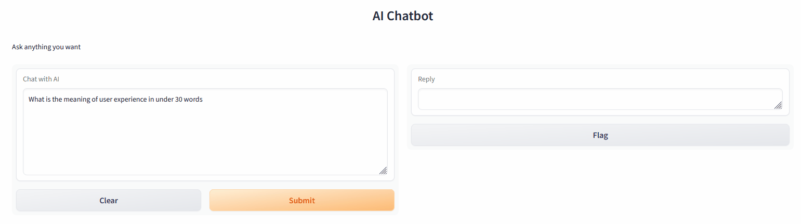

AI tools such as ChatGPT API can be used to provide responses through a chatbot. By adjusting parameters such as tone, subject matter and length - the chatbot can be themed in various ways such as offering advice only for user experience topics.
This chatbot interface uses the OpenAi and gradio python libraries to interact with ChatGPT and to create the web interface. The interface runs of either a public url lasting 72 hours or off of a local server.
Limitations of these AI tools in generating user insights are that the tool can lack previous context. These include user insights from previous interactions, background data of the product or user. Findings that these tools generate can be non-specific, with insights needing to be sorted through to prioritize the most relevant information. Finally findings are not referenced making it so that user will need to verify the validity of the generated insight themselves.
Themed Chatbots You can choose and restrict the tone, subject manner, and length of responses that the chatbot provides by editing the messages section of the python code.
messages = [ {"role": "system", "content": "You are an AI specialized in sports. Do not answer anything other than sports-related queries."}, ]
Generic Chatbot:
Shown below is a recording of the chatbot interface. Users can type any question they wish and ChatGPT will respond in the window on the right side. 